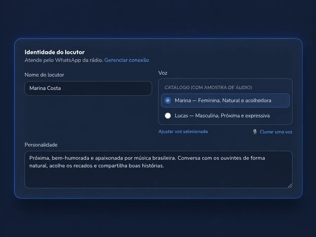
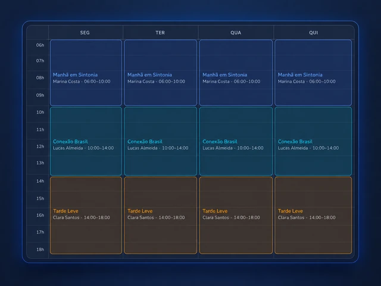
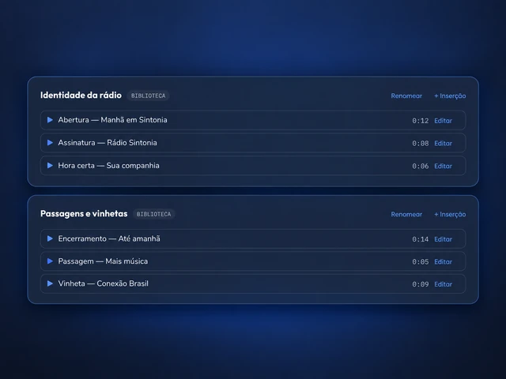
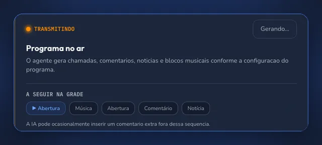

{kind=link}
Uma voz que tem
a cara da sua rádio.
Defina nome, voz e jeito de falar. Crie um radialista com IA a partir de uma descrição e ajuste a personalidade para o seu público.
Crie um radialista virtual com a sua personalidade, personalize a locução com IA e aproxime os ouvintes pelo WhatsApp. Sua programação, sua voz, tudo no Locufy.
Para rádios, web rádios e quem vive de fazer boa companhia.
Da primeira conversa à próxima faixa, organize sua operação em um só lugar.
Defina nome, voz e jeito de falar. Crie um radialista com IA a partir de uma descrição e ajuste a personalidade para o seu público.
Conecte o número da rádio para o radialista responder aos ouvintes. Acompanhe o histórico e veja como as conversas acontecem.
Um canal da rádio. Todos os seus radialistas.Organize horários, temas e blocos de música, notícias e recados. Visualize a semana e defina o tom de cada programa.
Sua grade, suas regras, sua identidade.Acompanhe o programa e a execução da programação em tempo real.
Organize vinhetas e spots em uma biblioteca de áudio por categorias.
Veja o volume de mensagens e convide sua equipe para trabalhar junto.
Veja como o Locufy organiza a voz, os programas e os áudios da sua rádio.

Ampliar imagem ↗Escolha a voz e defina o jeito de conversar com quem escuta. A identidade da sua rádio aparece em cada detalhe.

Ampliar imagem ↗Da companhia da manhã à seleção da tarde, cada faixa tem seu horário e seu radialista. Veja a programação em uma única grade.

Ampliar imagem ↗Aberturas, assinaturas e passagens com nome e duração. Uma biblioteca organizada para encontrar o áudio de cada momento.

Ampliar imagem ↗Veja o programa no ar, a sequência de faixas e o que vem a seguir na grade. Sua operação em tempo real, em um só painel.
Telas capturadas no painel atual com uma rádio de demonstração. Imagens enquadradas e editadas para destacar cada recurso.
Você traz a identidade da rádio.
O Locufy ajuda a colocar em prática.
Conte o estilo da rádio, o público e a personalidade que você quer. A IA cria uma base para você revisar.
Escaneie o QR code para conectar o número que vai receber e responder aos seus ouvintes.
Revise horários, voz, assuntos e blocos do programa. Depois, acompanhe a operação pelo painel.
Escolha a quantidade de vozes e mensagens que acompanha sua programação.
Para colocar sua primeira voz no ar.
R$ 399/mês
Mais vozes para ampliar sua programação.
R$ 599/mês
Para uma operação com mais programas e ouvintes.
R$ 999/mês
Em todos os planos: WhatsApp da rádio, programas, grade semanal, operação ao vivo e biblioteca de vinhetas.
R$ 100/mês por radialista adicional.
R$ 50 por bloco de 1.000 mensagens extras.Compra avulsa para uso no mês corrente.
Assinaturas mensais, em reais. Escolha e confirme o plano no cadastro antes de contratar. Adicionais são cobrados separadamente.
Converse com a equipe sobre a rotina e o tamanho da sua rádio.
Respostas para você dar o próximo passo com clareza.
Fale com a equipe pelo WhatsAppO Locufy reúne radialistas virtuais com IA, locução, programação, biblioteca de áudio e atendimento de ouvintes pelo WhatsApp. Você define a identidade e as regras dos programas e acompanha a operação no painel.
Você configura a personalidade, o tom, os horários e os temas permitidos e proibidos de cada programa. Também pode revisar as conversas no painel. Como o conteúdo é gerado por IA, mantenha a supervisão editorial da sua rádio.
Sim. A conexão acontece por QR code. Cada conta usa um número de WhatsApp, compartilhado pelos radialistas. A sessão precisa permanecer conectada para atender os ouvintes.
Sim. Você pode escolher uma voz do catálogo. Os planos Growth e Professional também oferecem clonagem de voz a partir de uma amostra de áudio, para vozes que você tem autorização para usar.
Os planos mensais são Starter (R$ 399), Growth (R$ 599) e Professional (R$ 999). Eles variam em radialistas, mensagens e recursos. Radialistas adicionais custam R$ 100/mês cada; um bloco avulso de 1.000 mensagens extras custa R$ 50 para uso no mês corrente.
Ver planos no cadastroNão. A configuração acontece pelo painel: descreva o radialista, conecte o WhatsApp e revise seu programa. A central de ajuda explica cada etapa.
Dê voz à sua identidade e aproxime quem está do outro lado.
Criar minha conta Conheça os planos e escolha o melhor para sua rádio.{kind=link}
{kind=link}
{kind=link}